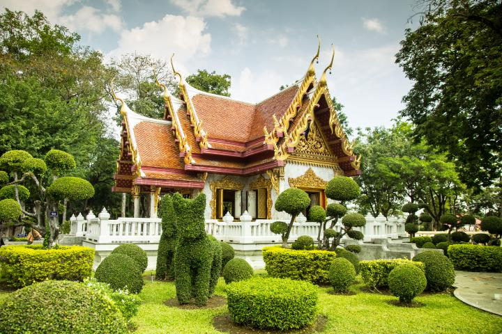
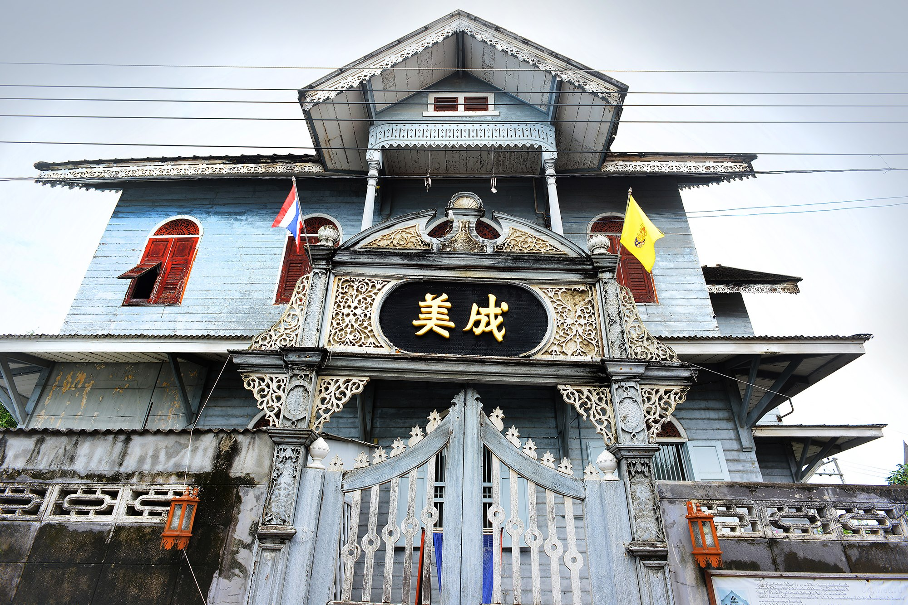
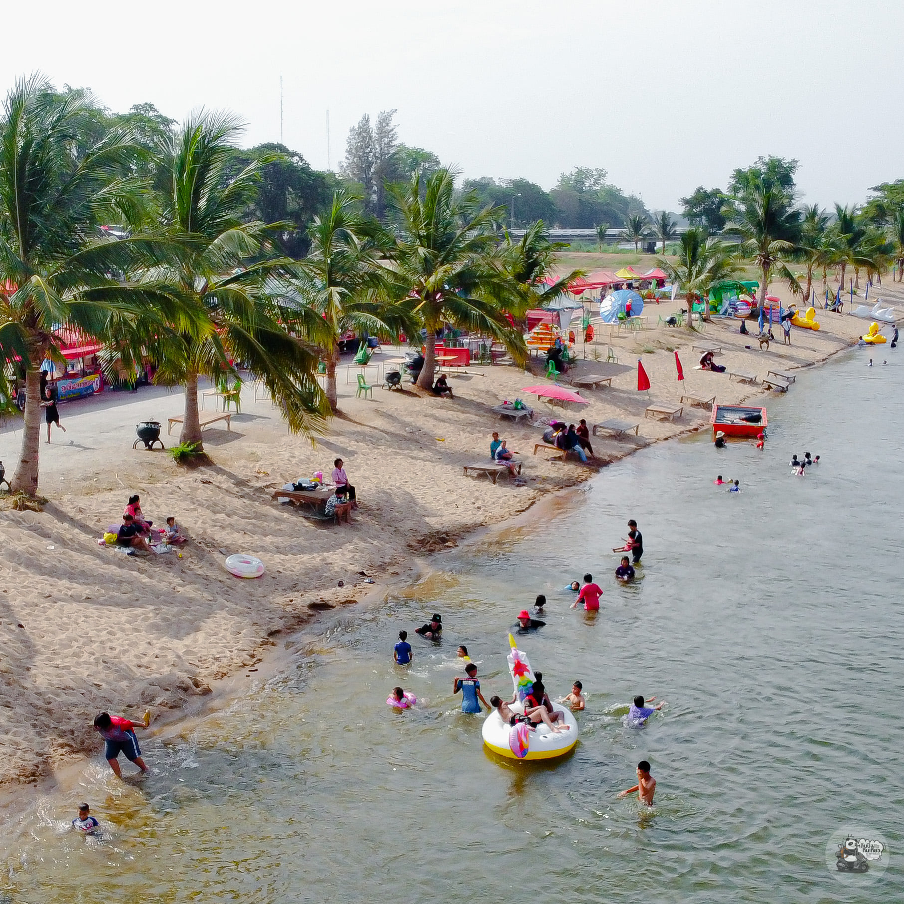

รู้จักตาก...ให้มากขึ้น
เขื่อนภูมิพล

เขื่อนภูมิพลเป็นเขื่อนคอนกรีตโค้งและเป็น เขื่อนอเนกประสงค์แห่งแรกของประเทศไทย เดิมชื่อเขื่อนยันฮี ต่อมาเมื่อวันที่ ๒๕ กรกฏาคม ๒๕๐๐ พระบาทสมเด็จพระเจ้าอยู่หัวได้พระราชทาน พระปรมาภิไธย ให้เป็นชื่อเขื่อนว่า เขื่อนภูมิพล ลักษณะของเขื่อน เป็นเขื่อนคอนกรีตโค้งเพียงแห่งเดียวในประเทศไทย และ เอเชียอาคเนย์ และเป็นอันดับ ๘ ของโลกสร้างปิดกั้น ลำน้ำปิง ที่ บริเวณเขาแก้ว อำเภอสามเงา จังหวัดตาก อ่างเก็บน้ำสามารถรองรับน้ำได้สูงสุด ๑๓,๔๖๒ ล้านลูกบาศก์เมตร
ประโยชน์ ของการระบายน้ำจากเขื่อนภูมิพล เขื่อนภูมิพลมีภารกิจหลัก คือ ระบายน้ำ ผลิตไฟฟ้า ให้ตรงตามแผนที่ กรมชลประทานกำหนดมาให้ โดยปริมาณน้ำที่ระบายออกไปจากเขื่อนจะถูกนำไปใช้ ประโยชน์หลายด้าน ทั้งด้านการเกษตรที่อุปโภค-บริโภค คมนาคม ท่องเที่ยว รวมทั้งผลักดันลำน้ำเดิมจังหวัดกำแพงเพชร และจังหวัดนครสวรรค์ สนับสนุนพื้นที่เพาะปลูกได้ถึง ๙.๕ ล้านไร่ ในพื้นที่ จังหวัดตาก
ศาลสำเด็จพระเจ้าตากสินมหาราช

ศาลคู่บ้านคู่เมืองจังหวัดตาก ที่ผู้คนให้ความเคารพ และมาสักการะจำนวนมากทั้งวัน เป็นศาลสมเด็จพระเจ้าตากสินมหาราชแห่งแรกของประเทศไทย ถูกสร้างขึ้นเมื่อปี พ.ศ. 2490 และอยู่คู่จังหวัดตากมามากกว่า 70 ปี
สมเด็จพระเจ้าตากสินมหาราช คือ เจ้าเมืองตากที่มีบทบาทสำคัญในประวัติศาสตร์ไทย ในฐานะจอมทัพที่รวบรวมกองทัพตีฝ่าวงล้อมของข้าศึกพม่าในเหตุการณ์เสียกรุง ฯ ครั้งที่ 2 และสามารถกู้กรุงศรี ฯ กลับคืนมา ก่อนย้ายเมืองหลวงไปที่ธนบุรี และขึ้นตนเป็นพระเจ้ากรุงธนบุรีองค์แรก และองค์เดียวของประเทศไทย
วัดพระธาตุบ้านตาก

เป็นวัดเก่าแก่ที่มี พระบรมธาตุเจดีย์ ตั้งอยู่ภายในวัด โดยสร้างขึ้นเมื่อประมาณพุทธศตวรรษที่ 18 ในอดีตชาวบ้านจะเรียกว่า วัดพระเจ้าทันใจ เพราะวัดนี้ประดิษฐาน พระเจ้าทันใจ พระพุทธรูปปางสมาธิ ที่เป็นที่สักการะของชาวบ้านนั่นเองค่ะ และยังเป็นพระธาตุประจำปีเกิดของปีมะเมีย
โดยมีตำนานเรื่องเล่าถึงพระเจ้าทันใจว่า สร้างเสร็จภายในหนึ่งวันเท่านั้น และว่ากันว่าศักดิ์สิทธิ์จริงๆ จะเห็นได้จากการที่มีพระเจ้าทันใจอยู่มากมายหลายวัดด้วยกัน แต่ที่เป็นที่นับถือมากที่สุด ก็คือที่นี่ วัดพระบรมธาตุ
โดยวัดยังมีการจัดงานในช่วงเทศกาลสงกรานต์ทุกปีๆ ด้วย นอกจากนั้นก็ยังมีงานประเพณีที่สำคัญ คือ ประเพณีขึ้นธาตุเดือนเก้า เป็นงานที่จัดขึ้นเพื่อเป็นการบูชาพระบรมธาตุ โดยจะจัดในวันขึ้น 14 ค่ำ และ 15 ค่ำ เดือน 9 ของภาคเหนือ ประมาณปลายเดือนพฤษภาคมหรือเดือนมิถุยายนของทุกปีค่ะ ซึ่งภายในงานก็ะมีการจัดขบวนแห่ ทั้ง ขบวนกลองยาว ขบวนปัจจัยไทยทาน ขบวนต้นเงิน ขบวนต้นผ้าป่า ขบวนตุงไชย และ ผ้าห่มองค์พระธาตุ
ตรอกบ้านจีน

ชุมชนดั้งเดิมที่ปรากฏหลักฐานการอยู่อาศัยมาตั้งแต่สมัยสุโขทัย เป็นชุมชนที่มีความสำคัญทางเศรษฐกิจและการค้า ภายในชุมชนมีการอาศัยอยู่ร่วมกันระหว่างชาวไทยและชาวจีน มีวัดสีตลารามเป็นศาสนสถานสำคัญประจำชุมชน และมีสถาปัตยกรรมบ้านไม้ที่มีลักษณะผสมผสานกันทั้งศิลปะสมัยอยุธยา แบบจีน และคลาสสิคในสมัยรัชกาลที่ 5
นอกจากจะเป็นตลาดค้าขายแล้ว ในตรอกบ้านจีนก็ยังมีบริษัทค้าไม้ระหว่างเชียงใหม่-กรุงเทพฯ มีบ้านนายอากรบ่อนเบี้ย รวมถึงบ้านของเศรษฐีอีกหลายๆ คน โดยในตลาดนั้นมีถนนทางเดิน มีการมุงหลังคาชนกันทำให้ถนนเป็นที่ร่ม สามารถเดินเชื่อมถึงกันได้ทั้งตรอก เรียกว่าเป็นตลาดใหญ่ที่คึกคักเป็นอย่างมากเมื่อช่วยร้อยกว่าปีก่อน
หาดทรายทอง

เป็นหาดทรายที่สร้างขึ้นทอดตัวยาวตลอดแนวแม่น้ำปิงมีความยาวถึง 1.5 กิโลเมตร ในช่วงเดือน ก.พ.-เม.ย. ของทุกปี จะมีนักท่องเที่ยวให้ความสนใจ และมาเที่ยวชมเป็นจำนวนมาก
สถานที่ท่องเที่ยวคลายร้อน สำหรับชาวเมืองตาก บรรยากาศยามเย็น มานั่งเล่นริมแม่น้ำปิง มีทั้งร้านอาหารเครื่องดื่มให้เลือกซื้อ สามารถลงไปเล่นน้ำได้ สนุกสนานมีทั้งเด็กและผู้ใหญ่ ใครที่ไม่เล่นน้ำก็สามารถนั่งชมวิวแม่ปิงและสะพานแขวนเมืองตาก